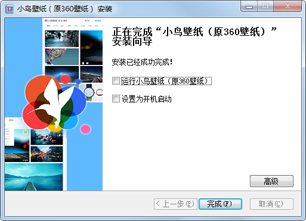
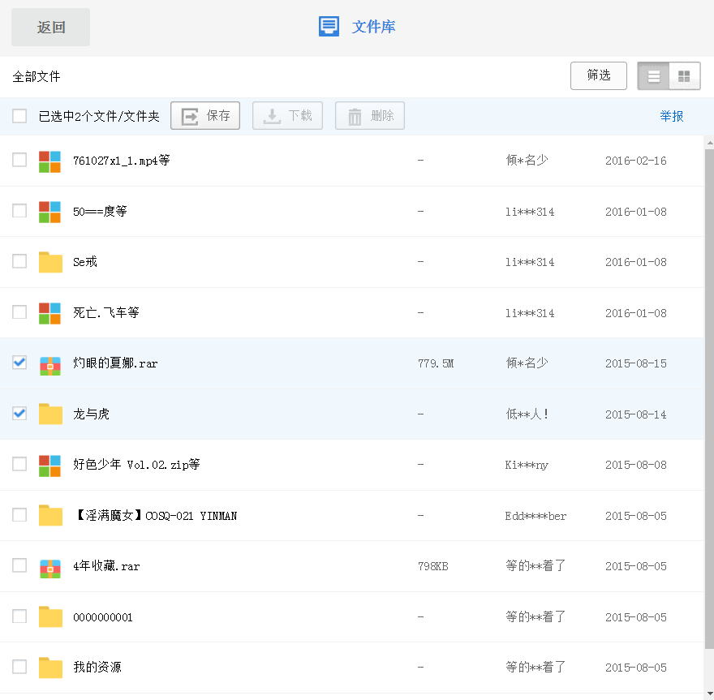
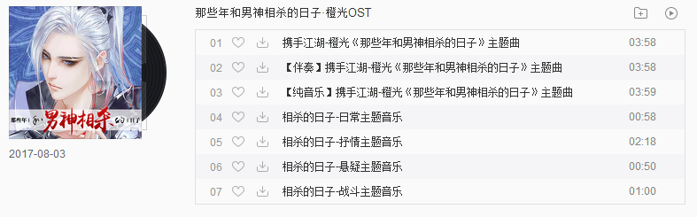
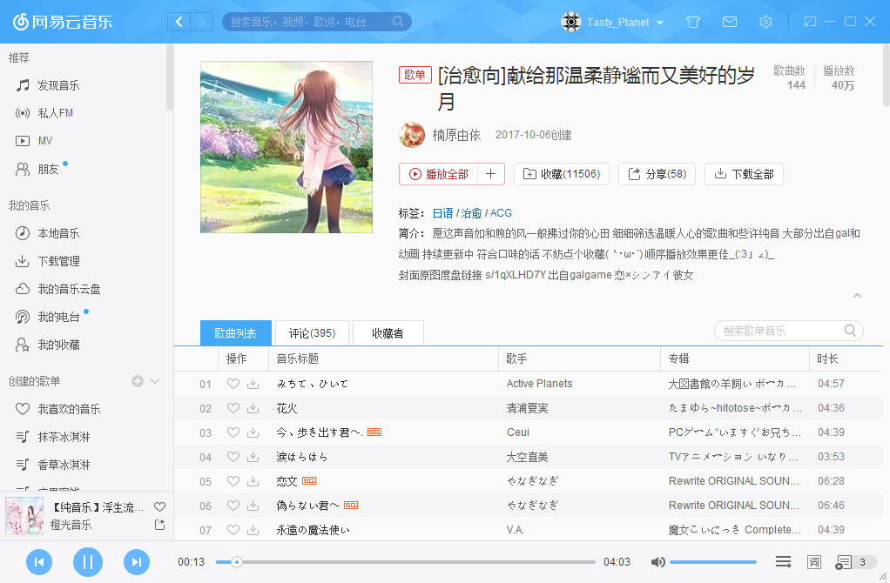
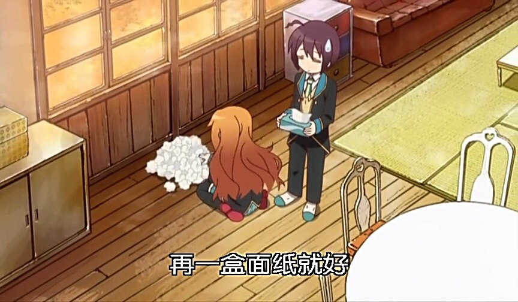
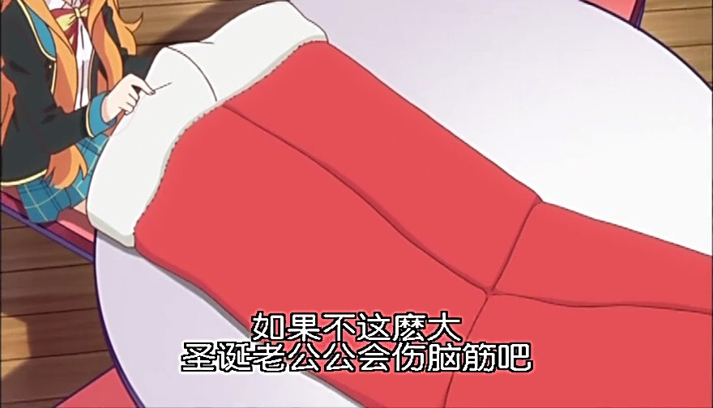
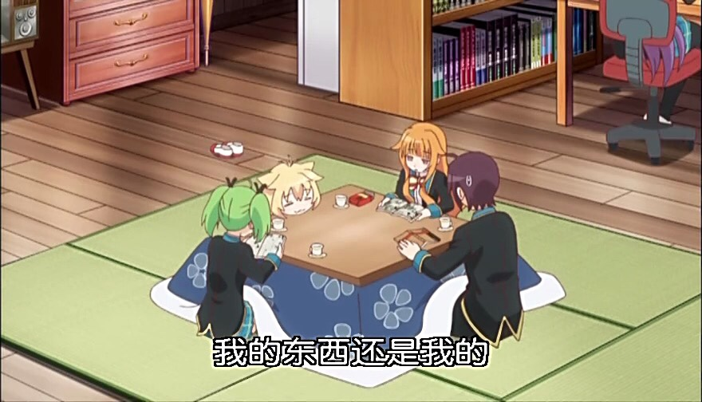
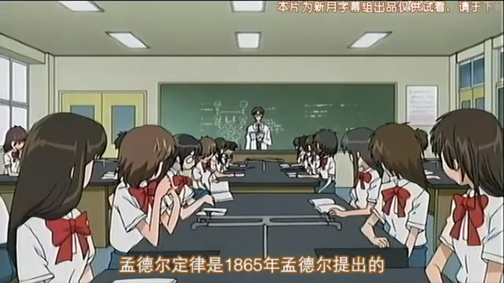
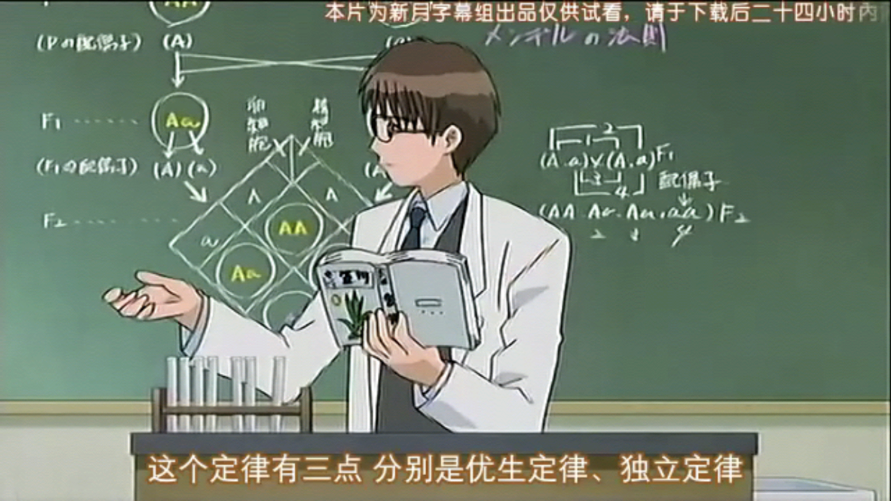

今天再来测试一下为知的其他功能（#滑稽）
首先放一段代码：
<!DOCTYPE html><html>
<head>
<meta name="robots" content="noindex,nofollow" />
<style>
div {
background: #eee;
padding: 10px;
}
p {
border: 1px solid #f00;
color: #00f;
}
</style>
</head>
<body>
<div>
<p>TEST</p>
</div>
</body></html>似乎没什么问题（#阴险）
唔...好吧~先这样了，我今后打算每周写一篇日记（诶这样不就成周记了吗，反正我尽量吧，实在不行就一个月写一篇日记哈哈 #笑）
正片开始：
之前在吧里说过，上周周末我一口气补完了四部番，没错，我还截了很多张很多张图，考虑到吧里发布图片可能被吞，我就放在这里好了（阴险的笑）
不过今天还有一些“日记”之类的东西想记录一下，所以番剧截图就放在最后面~
昨天某程序提示我更新软件，我当时也没多想直接点击了“更新”，更新结束后惊讶的发现360壁纸居然换了一个马甲？！

乛 乛 好吧其实我不太想吐槽的，只是，看到这马甲我第一反应是琴梨（#滑稽）
另外昨天打开百度云发现收到广告信息：
出于好奇我打开了文件库：

这都是些什么，，，，，
我默默地转存了一个压缩包和一个文件夹后关掉了网页...乛◡乛
发现一个有意思的专辑：

emmm 反正我是不知道如何吐槽，那就不吐槽了~~
正好windows版网易云今天升级，
等等，左下角那张歌单的封面，

看来我可以改贴吧昵称为“姬野星奏”了（#滑稽）
（早就想改了 #滑稽）
再放一张很久很久之前的截图（大家不要随便发出去哦~）
唔，上面说了这么多，总该进入正题了吧，没错，接下来就是截图秀了（#滑稽）
补番的时候不知不觉有些画面就想截下来，比如这张，
其实连我自己都不知道为什么要截下来，就是can't help，一天之内补完了四部番也不容易呢，有些番看完后还要回味一下，还好有三部番是我很早就开了坑的，刚把坑填上，没怎么截图，剩下来的时间就继续分享截图咯~
01#我感冒的时候差不多也是这样de

02#哇好大一只圣诞袜！

03#（#滑稽）
04#请不要这样，毕竟你是我学姐（#滑稽）
05#啊我好喜欢这种场面，还有这个画风（#滑稽）
06#有妹妹真好！就连我都这样认为的呢（#滑稽）
07#膜拜女装大佬 orz
08#捆绑play？（#滑稽）
09#你们这样对男主真的好吗（虽然是艺术之秋）
10#need just word，word has word（#滑稽）

11#完结撒花（#滑稽）
当然其他番我也截了几张图（笑）
我依然记得还有一个是分离定律（#滑稽）


嘛，今天的日记先这样了，虽然还有很多图片未整理完
(´-ωก`)晚安~